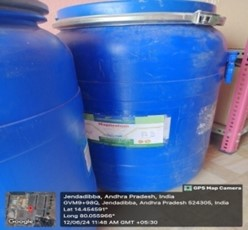
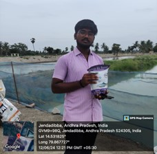

WEEKLY REPORT
WEEK- 5 (From 10-06-24 to 16-06-24)
Objective of the Activity Done: In this week ,I Came to know that the importance of Minerals and their Functionality on shrimp and the Bio security which we should maintain to protect the shrimp from Diseases .
Detailed Report:
Day 1:
- Biosecurity:
- >Biosecurity in shrimp farming involves stocking disease free seed, pond preparation, water screening, prevention of entry of disease carriers, personal hygiene, and sanitation. Biosecurity plays a pivotal role in farming to maintain disease free environment.
- 1. To control carriers (Burrowing) use crab fencing with good quality nylon & lDPE materials.
2. Use bird fencing to avoid birds and its droppings preferably red and blue coloured threads.
3. Farming area should be clean and maintain sanitization dip at entry and exit areas.
4. Clean farm equipment and utensils regularly with potassium permanganate or any hypochlorite solutions to avoid cross contamination.
5. Maintain personal hygiene of the farm workers.
Day 2:
- Minerals for Shrimp:
- >Minerals are inorganic substances essential for shrimp growth. Minerals for shrimp play a vital role in various physiological processes, so shrimp farmers should pay extra attention to their sufficiency in their ponds
- >Throughout their growth, shrimp absorb minerals from both their feed and the aquatic environment. The minerals include calcium, magnesium, sodium, potassium, iron, and copper.
Among the various minerals required by shrimp, calcium (Ca), magnesium (Mg), sodium (Na), and potassium (K) are two of the essential ones for shrimp. Check out the importance of minerals for shrimp and how to ensure their sufficiency in your cultivation.
Minerals serve various functions to maintain the metabolism of vanamei shrimp, aid in theformation of the exoskeleton, and regulate acid-base balance and osmotic pressure.

